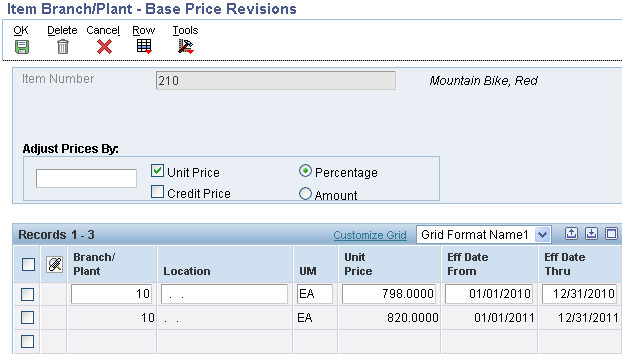
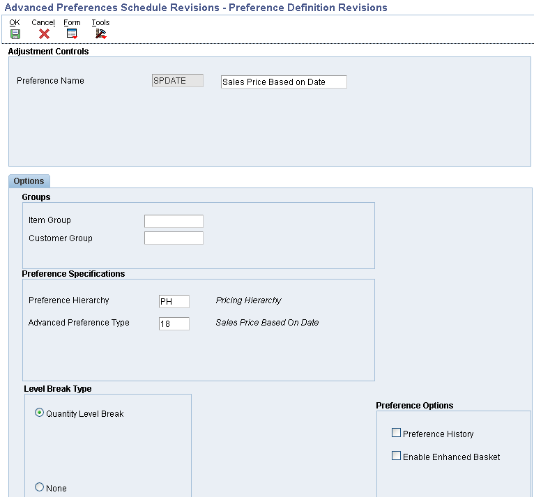
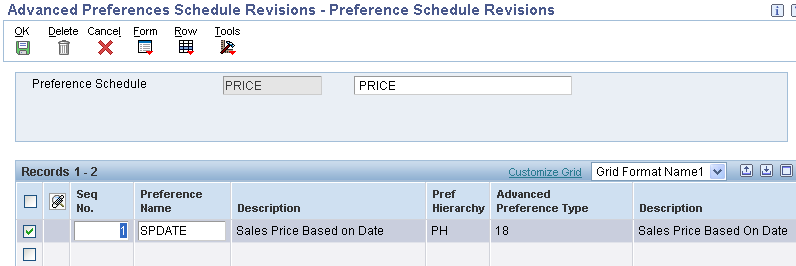
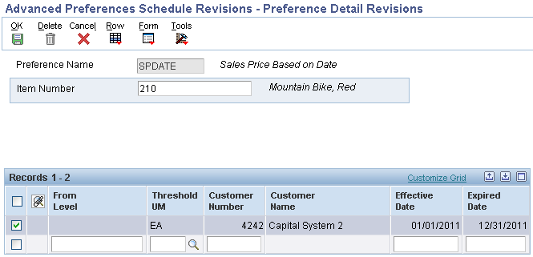

In the second example, the user will override the Price Effective Date to 12/31/2010 to allow the customer to obtain the 2010 pricing of $798.

| Purpose |
| Scope |
| Details |
| Base Price Setup |
| Sales Order Entry and the Price Effective Date |
| Sales Based On Date Advanced Preference |
| Sales Order Entry |
Overview
The Sales Price Based on Date is new functionality that allows the system to calculate a price based on a new Price Effective Date field populated in the sales order detail. This date is used to retrieve a Base Price (F4106). In addition, when Advanced Pricing discounts are applied, this date is used to apply the applicable discounts. The user can manually populate the Price Effective Date or the date can be populated by using a new Advanced Preference. The Advanced Preference can be setup by item, item group, customer, or customer group and can also utilize complex groups similar to the functionality used in advanced pricing. Otherwise, the date will default from the Order Date in the sales order header.
The Sales Price Based on Date can be used in the following scenarios:
A new price is in effect January 1. Since the customer is a frequent buyer, the order entry person can override the sales Price Effective Date to December 31, therefore allowing the customer to get last years (December's) pricing.
Arrangements have been made with the customer to give them December's pricing throughout the entire month of January. An Advanced Preference can be set up to determine a December Sales Price Based Date, for the customer, therefore giving them last years price for the entire month of January.
This document describes the way in which the Sales Based On Date Advanced Preference functions in EnterpriseOne 8.9 and higher.
In this example, the item is set up with two prices. One price for 2010 with effective dates of 01/01/2010 to 12/31/2010 for $798; Second price for 2011 with effective dates of 01/01/2011 to 12/31/2011 for $820.

In the first example, the user will enter a sales order allowing the Price Effective Date to default from the Order Date in the header. The customer will get the 2011 pricing of $820 determined by the price effective date of 03/25/2011.
In the second example, the user will override the Price Effective Date to 12/31/2010 to allow the customer to obtain the 2010 pricing of $798.
Arrangements have been made to give a customer 2010 pricing for the entire year of 2011. An Advanced Preference will be setup to automatically default the Price Effective Date to 12/31/2010. By setting up the customer preference, order entry errors will be eliminated.
Note: For additional information on general Advanced Preferences setup, please see Advanced Preferences (P4070/P4071/P4072/P4210/P42101)).
On menu G40311, create an Advanced Preference name for Sales Price Based on Date.

In this example, the hierarchy has an intersection set for specific item number and specific customer. 
Add the Preference Name to a Preference Schedule.

Add Preference Details. Preference Details can be added by taking a Pref Detail row exit from within the Preference Schedule Revisions. In this example, the Preference Detail is setup by specific item and customer and is effective for the entire year of 2011 (01/01/2011 to 01/31/2011).

From the Preference Detail revisions take the Pref Detail row exit to specify the Sales Price Effective Date for the preference.
The Pricing Based on Date (PD) field should be set to "7". In this example, the Price Effective Date is setup as 12/31/2010.
Note: It is possible that users may encounter the following error while adding a Preference Detail (P4072) record:
Blank Value Not Supported By Preferences Error (087W)
CAUSE . . . . The Preference system does not support blank values to be entered.
RESOLUTION. . Enter a non-blank value
This will occur if in the Preference Values Definition Table (F40711) for Preference Type 18, the second record for Data Item PEFJ has RQR incorrectly set to Y (Required) when it should be N (Not Required).
The following steps will resolve the issue:
Note: When adding the preference detail, the user must click OK twice in order for the record to be added.
The functionality has been changed/modified for release 9.0 and above under the BUG 13393057 : SALES PRICE BASED ON DATE ADV PREFERENCE TYPE 18. Customers have an option to use the new 40/AD UDC in advanced Preference Type 18 OR Preference Type 02 (Order Detail Defaults) - or both - by changing the "Required" field (displays as "R (Y/N)") in the Preference Values Maintenance (P40711) program to value “Y”. For Preference 18, it is the CP01 (Sales Price Based on Date) value that should be set to "Y". If the CP01 value is left at "N", then UDC 40/DB will be used in the preference details program.
If using 40/AD, The system constant value will not override the Sales Price based on date Advanced Preference Value. However, the PD cannot be blank in the P4072 setup.
Note: Per Bug 20448791, Pricing Based on Date '4' (Actual Ship Date) is not supported even though it is available for selection. Preference 18 is evaluated during sales order entry, and the actual ship date is not set until Ship Confirm (P4205). Neither P4205, or R42950 (Reprice Sales Orders) will set the Price Effective Date based upon the Actual Ship Date.
To activate Advanced Preferences for Sales Order Entry (P4210), processing option #1 on the Preference tab must be set to '1' and the Preference Schedule must be populated on processing option #3 on the Preference tab.
The sales order has an Order Date of March 25, 2011 but the Price Effective Date is showing as 12/31/2010 based on the Advanced Preference. As a result, the customer gets the 2010 price of $798.
Note: A Preference Schedule can also be defined at the system level by placing the schedule in the system constants.